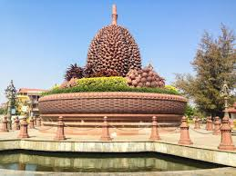

Kampot was the capital of the Circonscription Résidentielle de Kampot under French rule and Cambodia's most important seaport after the loss of the Mekong Delta and before the establishment of Sihanoukville. Its center is, unlike most Cambodian provincial capitals, composed of 19th-century French colonial architecture.

Kampot, an alternative spelling of the Slavic drink Kompot. Battle of Kampot, a battle which took place in Cambodia (1973-1974) Kampot (crater), a crater on Mars. Kampot pepper, black pepper grown and produced in Cambodia.